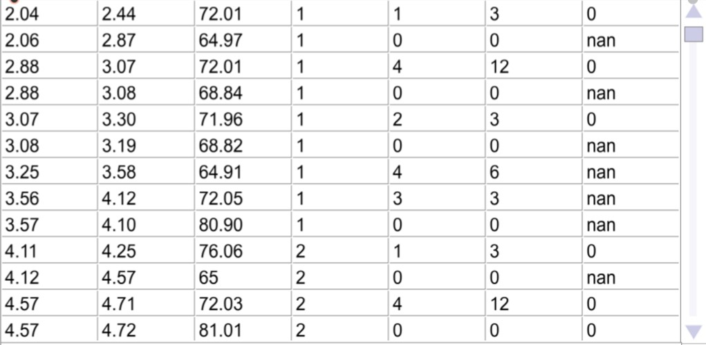

Interactive Tools for Exploring Performance Patterns in Hardanger Fiddle Music
Brief Introduction
- Tradition Norwegian folk music
- Hardanger fiddle
- Associated with springar dance tradition.
- Triplet meter with complex ornamentations and asymmetrical timing patterns.
- MIRAGE - A Comprehensive AI-Based System for Advanced Music Analysis
- Improve computers' capability to listen to and understand music. MIR
- Currently research into performance patterns in Hardanger fiddle music.
Research Question
How can we design interactive computational tools to explore performance patterns in Hardanger fiddle music?
- How can we successfully generate performances from Hardanger fiddle music transcriptions with the help of performance patterns?
Method
Develop a small set of interactive computational tools based on the performance data recieved from MIRAGE.
- Qualitative - online presentation followed by questionnaire.
- Quantitative - small scale analysis of performance data produced by the tools.
Approach
Design 3 interactive tools that explore timing patterns of Hardanger fiddle performances.
- 1/3 - Interactivity and engagement
- 2/3 - A structural perspective
- 3/3 - Multi-dimensional analysis
1/3
The EditorGoal
- Data compreshension
- Asymmetrical timing patterns.
- Explore alternative timing patterns.
- Invite reflection on how players modify the written score during play.
Transform the data



2/3
Explores how timing patterns of repeating motifs (phrases/harmonic patterns) evolve over time.
Goal
- Look at timing patterns from a structural perspective.
- Enhance data visualization
- Enable a temporal perspective (evolution).


3/3
Investigates various properties of recurring timing patterns
Goal
- Enable inspection of property relationships between structures that have similar timing patterns.
- Multi-dimensional analysis
- Dynamic UI
- User chooses which property relationships to plot.